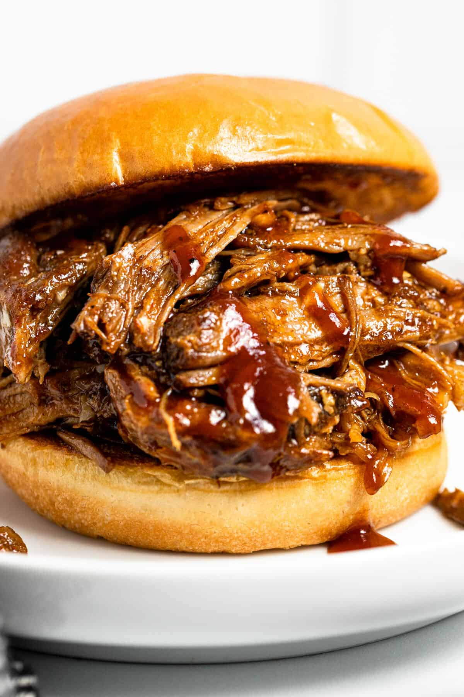

Pulled Pork

Description
Fall off-the-bone pork that's easy and delicious!.
Ingredients
Steps
- Set slow-cooker to "low"
- Place pork in cooker, cover in BBQ sauce
- After ~4 hours, flip the pork and cover again in BBQ sauce
- After 7 hours total cook time, pull pork apart and mix within the slow-cooker
- Cook for 1 more hour, serve
Home